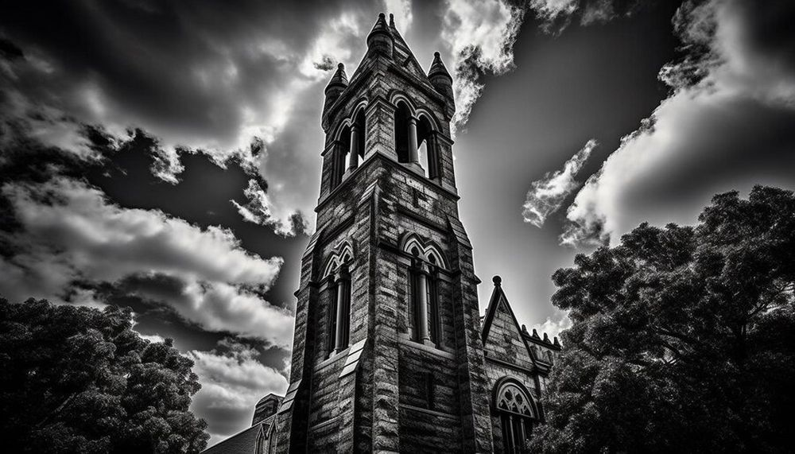

Descoperă München - O incursiune în capitala Bavariei
München este capitala Bavariei din Germania, oferind o varietate de atracții pentru vizitatori:
-

Marienplatz - Inima orașului
Această piață centrală găzduiește clădiri istorice, precum Primăria Nouă și Turnul Cucoanelor.
-

Neues Schloss - Rezidența regală
Această fostă reședință regală oferă o privire în istoria Bavariei și găzduiește muzee interesante.
-

Englischer Garten - Parc natural
Acest parc extins oferă zone verzi, alei pitorești și chiar o valură unde surferii se pot bucura de valuri artificiale.
-

Palatul Nymphenburg - Eleganță barocă
Palatul baroc și grădinile sale sunt un exemplu splendid de arhitectură și frumusețe naturală.
-

Viktualienmarkt - Piața alimentară
Această piață oferă o gamă variată de alimente, produse locale și o atmosferă vibrantă.
Concluzii
München îmbină istoria cu modernitatea, oferind o experiență culturală și relaxantă pentru toți cei ce îl vizitează.